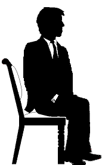
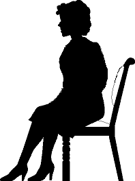
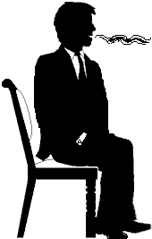

|
|
Picture
Guide to TRs |
|
|
Picture
Guide to TRs |
Here is a picture guide to the eight TR drills that make
up TR-0 to TR-4.
You will get to the actual drill instructions a little later in the manual.
Also, this chapter contains the statement of what you are working towards and
what Valuable Final Products and End Phenomena are obtainable and expected on Auditors
TRs.
OT TR-0
 |
|
 |
|
Student (eyes closed) |
<Distance> |
Student (eyes closed) |
OT TR-0 the students are drilling simply being there as potential Cause or Source-point or potential Effect or Receipt-point. This is done as an undercut to using the comm formula. The first step is to BE there. Purpose: The student simply has
to comfortably confront another person. The student trains to BE there in
a position one meter (3 feet) in front of another person. He has to BE
there and be relaxed and comfortable about it. Drill done with eyes
closed. |
||
TR-0, Confronting
 |
Both
Students:
<----- Distance Attention Confront |
 |
|
Student confronts (eyes open) |
<Distance> |
Student confronts (eyes open) |
TR-0, Confronting. We have potential Cause or Source-Point or potential Effect or Receipt-point as in OT TR-0 Here the students drill the following parts of the Comm Cycle: Observation, Distance, Consideration, Attention, and Confront. Purpose: The student is to
confront a preclear with auditing only or with nothing. The idea is simply
to get the student able to hold a position 1 meter in front of a
preclear and to be relaxed and comfortable about it. He simply has to BE
there without being thrown off, distracted, or having any reactions to
anything the preclear says or does. |
||
TR-0, Bullbaiting
|
Student:
-----> |
 |
|
Student,
confronts at effect |
<Distance> |
Coach, Bullbaits at cause |
TR-0, Bullbait. Student is drilled in potential Cause or Source-Point and Effect or Receipt-point, with Duplication. He drills Observation, Distance, Consideration, Attention. He is confronting a pc being Cause or Source-point. He has to confront the pc - no matter what pc says or does. Purpose:
The student is to confront a preclear with auditing only or with
nothing. The idea is simply to get the student able to hold a position 1
meter in front of a preclear and to be relaxed and comfortable about it.
He simply has to BE there without being thrown off, or distracted, nor
have any reactions to anything the preclear says or does. |
||
TR-1, Auditing Command
 |
Student: -----> Intention Impingement Interest Control Direction Timing Velocity <----- Observation Attention |
|
|
Student, Delivers command, Source-point. Ensures it arrives. |
<Distance> |
Coach listens; Receipt-point |
TR-1, Auditing Command. Student as Source-point, has to be aware of Receipt-point, and as Cause get a Message across a Distance to the Receipt-point. He uses Attention, Interest, Control, correct Direction, correct estimation of Distance, Time and correct Timing, correct Velocity, correct 'Volume, Clarity and Impingement' (called impingement in illustration). His Intention is that his message is received and understood at Receipt-point. Purpose: to drill
and perfect how to deliver an auditing command to a pc - each command is
to be delivered fresh, in its own unit of time; and to deliver it
without flinch or strain, but done naturally and directly from auditor
to pc. |
||
TR-2, Acknowledgments
|
|
Student:
-----> comm <----- Acks |
|
|
Coach, Delivers
sentences, |
<Distance> |
Student,
listens, understands, |
TR-2, Acknowledgments. Student is specifically drilled in switching from Source-point to Receipt-point. She has to receive, Duplicate and Understand the preclear's Answer, and then back to Cause to give the Acknowledgement. Purpose: To teach
the student auditor that an acknowledgment is a method to control a
preclear's communication in session. An acknowledgment is a full
stop, that ends a communication cycle. The student must
understand and appropriately acknowledge so as to end the comm. |
||
TR-2 1/2, Half Acks
|
|
Student: ----->> Receives comm... <<----- Half Acks (encourages) ----->> ...Receives continued comm |
|
|
Coach, receives
half acks and |
<Distance> |
Student,
listens, understands, |
TR-2 1/2, Half Acks. the emphasis here is on drilling Acknowledgement and Control in such a way as to bring about the "Continue" (or "change") part of the Control cycle. Otherwise as the previous drill. Purpose:
To teach the student that a half ack is how you encourage a pc to
keep talking about something. |
||
TR-3, Duplicative Question
TR-4, Originations
|
|
<<------- Do birds fly? -------->> I LOVE CARS! <<----- 1) Really? tell me about. it... <<-------- ---------->> MAKES ME FLY <<-------- 2) Thank You! <<-------- 3) Re: flying... Do birds fly? |
|
|
Coach originates
about himself |
Student 1) Understands 2) Acks 3) returns pc to session (maintains ARC & control). |
|
TR-4, Originations. An origination is something of importance to pc he brings up on his own. Pc is at cause unexpectedly. Student handles it smoothly and gets pc back on the process. Purpose: To teach
the student auditor to maintain ARC with the preclear when he
originates. She should not become silent or startled or hesitant by
this, but maintain communication and ARC with the preclear
throughout an origination. |
||
The Valuable Final Products and EP of TRs
|
The TRs are drills. That means they are an objective activity aimed at giving the student certain skills. Drills are not about how the student feels about the subject, but about how well he can perform the actions. So when we use 'End Phenomenon' below, it is in a different sense than it is used for processes. Here it is 'the level of competence needed for a pass.' When being coach or student in the drills it is important to know what you are working towards. This section should clear that up and should be well known from the very beginning of drilling. Instruction and coaching are not based on opinion. They are based upon producing the Valuable Final Products (VFPs) and the End Phenomena (EP) of the drills. VALUABLE FINAL PRODUCT No. 1
of TRs is: VALUABLE FINAL PRODUCT No. 2
of TRs is: The END PHENOMENON of TRs is: Note on Prerequisites Such students need the drug problem and the effects of drugs handled first. R. Hubbard designed a sauna program or Rundown called 'the Cleansing Rundown'. This is designed to cleanse the effects of drugs out of the body. This is a prerequisite to a successful TRs course for students with an extensive drug history. You do not do the TRs course while you receive auditing. The Auditors TRs Course is known to change and improve cases significantly. Although the goal is skills and not subjective gains, you do not want to mix or do several case changing actions at the same time. So the rule is, TRs Course should only be done when the student is not also a pc in the middle of an auditing action. It can be done before any auditing or after completion of a whole Grade but never in the middle of an action. |